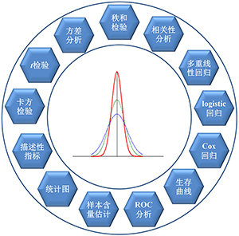

|
DataAnalyst——免费、便捷式医学大数据和人工智能分析平台 |
| 主页 | 基础统计分析 | 数据挖掘与机器学习 | 团队简介 | 联系我们 |
| 最新动态 |
平台简介 |
| 主要分析方法 |
|  |
|
基础统计分析
|
 |
|
数据挖掘与机器学习 |
|||
课题组简介 苏州大学柯朝甫教授课题组长期从事生物统计理论与方法，以及医学实际应用研究，具有丰富的医学研究设计和复杂大数据分析经验。 |
联系我们 Email: cfke@suda.edu.cn 地址：苏州市苏州市工业园区仁爱路199号401楼 |
| 苏州大学医学部公共卫生学院柯朝甫教授课题组 Email：cfke@suda.edu.cn 地址：中国 江苏省苏州市工业园区仁爱路199号 |